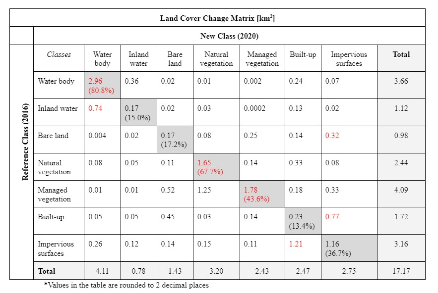
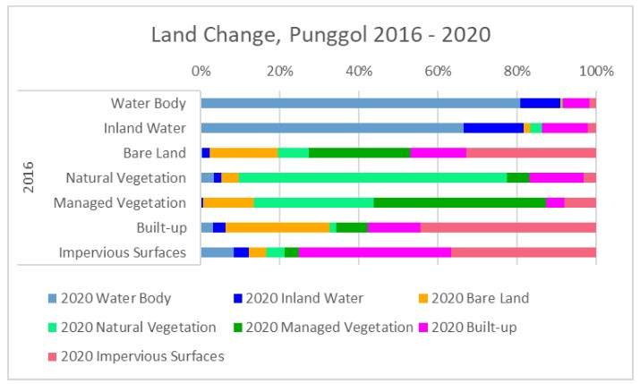

Results & Discussion
For a more detailed analysis, please refer to our report here.
Land Cover Classification

The results of the land cover classification of Punggol in 2016 and 2020 shows seven classes of land cover namely; water body, inland water, bare land, natural vegetation, managed vegetation, built-up and impervious surfaces.
Area
From 2016 to 2020, out of the seven classes identified, four of them saw an increase in area and they are Water body, Bare land, Natural vegetation and Built-up. In particular, Water body, Bare land and Built-up had a more-than-doubled increase in area of 93%, 143% and 86% respectively. The largest increase was for Bare land whose area increased from 1.11km2 to 2.70km2. On the other hand, land cover classes such as Inland water, Managed vegetation and Impervious surfaces all experienced a decrease, with Managed vegetation having the sharpest decline of 53%.
Proportion

Looking at the proportion of land cover classes, Managed vegetation and Built-up were the dominant land cover class in 2016, both with a proportion of 22%, while the least classified was Inland water with a percentage of 5%. However, in 2020, the percentage of Managed vegetation dropped drastically to 8% while Built-up increased to 32% and constituted the largest proportion of area. Similar to 2016, Inland water had the lowest proportion of area (2%). Other than Built-up which increased in proportion, land covers such as Water body and Bare land increased to 27% and 11% respectively. However, despite the increase in area for Natural vegetation from 3.11km2 to 3.47km2 from 2016 to 2020, the proportion of the land cover decreased from 16% to 14%. This is because the rate of increase in other land cover classes such as Water body, Bare land and Built-up exceeded the rate of increase in area for Natural vegetation.
Land Cover Types
Water body and Inland water
Land cover classes such as water body and inland water had some changes from 2016 to 2020. In particular, water body saw a huge increase in area from 3.5km2 in 2016 to 6.71km2 in 2020. Inland water, on the other hand, decreased from 0.90km2 to 0.48km2, and areas which were originally inland water in 2016 were classified as water body in 2020.
Bare land
In 2016, bare land only constituted 1.11km2 of area. Within a span of 4 years, the area increased to 2.70km2. Majority of the bare land will be reserved for future developments in Punggol such as new BTO projects as well as commercial developments.
Managed vegetation and Natural vegetation
For vegetation land cover, managed vegetation experienced a significant decline from 4.29km2 in 2016 to 2.01km2in 2020. Majority of the managed vegetation cover located at the Punggol Point District and Punggol Downtown area was deforested and became Bare land in 2020. Upon further research, it was found that HDB will have two BTO projects in Punggol Point, Punggol Point Crown and Punggol Point Cove that are estimated to be completed by 2024 and will provide at least 2,700 flats (Zheng, 2019). Additionally, the bare land in Punggol Downtown is likely to be used for built-up areas in the subsequent years for the development of commercial developments like the Punggol Digital District and Punggol Coast MRT, slated to open in 2023 and 2024 respectively (Wong, 2020).
As for natural vegetation, there was a slight overall increase from 3.11km2 in 2016 to 3.47km2 in 2020, where areas at the Canal District were classified as natural vegetation in 2020. However, the increase in natural vegetation is negligible as compared to increase in other land cover classes.
Built-up
Built-up areas also experienced a huge increase from 4.24km2 in 2016 to 7.88km2 in 2020 and is also the dominant land cover class for both years. Between 2016 to 2020, there were many new BTO projects introduced to meet the rising housing demands. These areas include Matilda District, Northshore District, and Waterway District, which consist of many new houses. An example is the Northshore Residences I and II, located in Punggol Northshore which were completed in 2020, offering around 1400 housing units.
Impervious Surfaces
Lastly, the change in impervious surfaces from 2016 and 2020 is insignificant as the area of impervious surfaces constituted a very small amount of 2.40km2 in 2016 and 1.48km2 , making it difficult to observe the changes by looking at the map.
Accuracy Assessment
User’s Accuracy
The User’s Accuracy measures the probability that a pixel labelled as a certain class is really in that class. In 2016, the user’s accuracy ranged from 61% to 100%, with Impervious surfaces having the lowest user’s accuracy and Bare land and Natural vegetation having the highest user’s accuracy. In 2020, the user’s accuracy ranged from 26% to 100%, with Inland water being the lowest and Bare land being the highest. The low user’s accuracy of 26% for Inland water indicates a large number of False Positives, which means many of the pixels that were predicted to be inland water were not actually inland water.
Producer’s Accuracy
The Producer’s Accuracy measures the probability that a pixel in a given class was classified correctly. In 2016, the producer’s accuracy ranged from 46% to 100%, with Built-up having the lowest producer’s accuracy, and Water body, Inland water, Bare land, Managed vegetation having the highest. In 2020, the producer’s accuracy ranged from 32% to 100%, with Built-up being the lowest and Water body, Inland water and Natural vegetation being the highest. The low producer’s accuracy for Built-up for both 2016 and 2020 indicates a large number of False Negatives, many pixels that were predicted to be in a different class belong to the built up class.
Overall Accuracy
The overall accuracy of a land cover classification refers to how effectively the pixels were grouped into the correct land cover class. The overall accuracy for 2016 and 2020 is 86% and 72% respectively. According to Anderson (1976), the minimum accuracy for land cover classification should be at least 85%. Based on the threshold, the overall accuracy for 2016 is at a relatively acceptable level of 86%, indicating that the majority of the pixels were correctly classified. However, the overall accuracy for 2020 is relatively lower at 72%, which is also below the threshold, indicating that there may be some discrepancies in the land cover classification results.
Kappa Statistic
The Kappa Statistic provides an overall assessment of the accuracy of the classification by measuring how the classification results compare to values assigned by chance. The higher the value, the more accurate the classification is. The Kappa Statistic is 0.83 and 0.67 for 2016 and 2020 respectively, and based on the rating criteria, the strength of agreements lies in an almost perfect range for 2016 and a substantial range for 2020.
| Kappa Statistics | Strength of Agreement |
|---|---|
| < 0.00 | Poor |
| 0.00 - 0.20 | Slight |
| 0.21 - 0.40 | Fair |
| 0.41 - 0.60 | Moderate |
| 0.61 - 0.80 | Substantial |
| 0.81 - 1.00 | Almost perfect |
F1 Score
The F1 score is a harmonic average of precision and recall and it is a measure of accuracy. The higher the score, the more accurate the classification model is.
Based on the results, the F1 score for 2016 and 2020 is 88% and 76% respectively. Although the F1 score for 2016 is relatively high, indicating that the classification is more accurate, the F1 score for 2020 is lower than ideal at 76%. Hence, further improvement needs to be done for 2020 in order to achieve a higher F1 score and a higher overall accuracy level.
Land Change Detection
Change Detection Matrix
The land cover change detection matrix is shown in the table below. The diagonal numbers highlighted in grey indicate areas that did not change from 2016 to 2020 and the percentages are the proportion of the area to the total area in its respective class in 2016. The font of the largest type of area per class in 2016 is colored red.

Punggol has seen many changes between 2016 and 2020. Surprisingly, the areas which have been classified to the same class in 2016 and 2020 does not exceed 85% across all classes (in relation to 2016 total area), with Water body at the highest proportion of 80.8% and Built-up at the lowest proportion of 13.4%. This indicates high changes to the land and this may be due to changes in land between 2016 and 2020, and inconsistent land area classification.
The land change bar graph shows an overall visual of land use changes. It displays the proportion of the total area of each class that has been converted to other land use in 2020. The most visible change is in Inland Water where a large proportion is converted to Water body. Our team is intrigued by the visual and will deep dive into the numbers in the following sections.

Water (Water body and Inland water)

There was an increase of 2.43% of Water area from 2016 to 2020 in proportion to the total area of Water area in 2016.
Since 2016, Water area has been converted to other land usage. 0.75% was converted to Bare land, 0.84% was converted to Natural Vegetation, 0.05% was converted to Managed Vegetation, 7.79% was converted to Built-ups, and 1.92% was converted to Impervious surfaces in proportional to the total area of Water area in 2016. Lastly, Water area retains 88.65% of its original land use at the same location in Punggol in proportion to the total area of Water area in 2016.
Since 2016, the Non-Water area has been converted to Water area. 0.46% of Bare land, 2.63% of Natural Vegetation, 0.45% of Managed Vegetation, 2.26% of Built-up, and 7.98% of Impervious surfaces was converted into Water area in proportion to the total area of Water area in 2016.
However, it will be imperative to take the numbers for the Water category with a little pinch of salt as there are many areas within the non-Water areas that have been classified as Water. However there are areas near the coastline of Punggol that were previously classified as Built-up/Impervious Surface in 2016 but were converted into Water in 2020. Our team speculates that these plots of land could only be visible during low-tide when the water level is low.
Vegetation (Natural Vegetation and Managed Vegetation)

Vegetation which consists of Natural vegetation and Managed Vegetation, saw moderate levels of changes between 2016 and 2020. There was an overall decrease of 13.92% in Vegetation between 2016 and 2020. In 2016, the total area for vegetation was approximately 6.53km2 and the total area for vegetation was approximately 5.63km2 in 2020. The combined area from the classes containing a permutation of Natural vegetation and Managed Vegetation is 4.82km2; which is 73.80% of 2016's Vegetation category and 85.74% of 2020's Vegetation category.
9.96% of the vegetation was lost to other land usage and 4.67% of the vegetation was gained between 2016 and 2020. Areas under the vegetation category were mostly likely to convert into Impervious surfaces at 2.41%, Built-up at 3.00%, and Bare land at 3.69%.
Natural Vegetation

There was an increase in 31.08% of Natural Vegetation land from 2016 to 2020 in proportion to the total area of Natural Vegetation in 2016.
Since 2016, Natural Vegetation area has been converted to other land usage. 3.21% of Natural Vegetation was converted to Water body, 1.94% was converted to Inland water, 4.54% was converted to Bare land, 5.68% was converted to Managed Vegetation ,13.58% was converted to Built-ups, and 3.32% was converted to Impervious surfaces in proportional to the total area of Natural Vegetation in 2016. Lastly, Natural vegetation retains 67.72% of its original land use at the same location in Punggol in proportion to the total area of Natural Vegetation in 2016.
Since 2016, the Non-Natural Vegetation area has been converted to Natural Vegetation. 0.27% of Water body, 1.37% of Inland Water, 3.21% of Bare land, 51.17% of Managed Vegetation, 1.19% of Built-up, and 6.15% of Impervious surfaces was converted into Natural Vegetation in proportion to the total area of Natural Vegetation in 2016.
From the numbers, Natural Vegetation is most likely to be reduced for Built-ups. This could be interpreted as clearing for more area to create functional built-ups that meet human needs. Additionally, Natural Vegetation is most likely to grow through the conversion of Managed Vegetation to Natural Vegetation.
Managed Vegetation

There was a decrease by 40.71% of Managed Vegetation land from 2016 to 2020 in proportion to the total area of Managed Vegetation in 2016.
Since 2016, Managed Vegetation area has been converted to other land usage. 0.16% of Managed Vegetation was converted to Water body, 0.36% was converted to Inland water, 12.79% was converted to Bare land, 30.46% was converted to Natural Vegetation, 4.51% was converted to Built-ups, and 8.13% was converted to Impervious surfaces in proportional to the total area of Managed Vegetation in 2016. Lastly, Managed vegetation retains 43.58% of its original land use in proportion to the total area of Managed Vegetation in 2016.
Since 2016, the Non-Managed Vegetation area has been converted to Managed Vegetation. 0.05% of Water body, negligible area of Inland Water, 6.13% of Bare land, 3.38% of Natural Vegetation, 3.41% of Built-up, and 2.73% of Impervious surfaces was converted into Managed Vegetation in proportion to the total area of Managed Vegetation in 2016.
Apart from Managed Vegetation turning into Natural vegetation, Managed vegetation are also likely to convert into Bare land and Impervious Surface. This could indicate that Managed vegetation is a versatile type of land that could be transitioned into other land types.
Land Terrain (Bare land, Built-up and Impervious Surfaces)
Bare Land

There was an increase by 45.71% of Bare land from 2016 to 2020 in proportion to the total area of Bare land in 2016.
Since 2016, Bare land area has been converted to other land usage.0.42% of Bare land was converted to Water body,1.82% was converted to Inland water, 25.51% was converted to Managed Vegetation, 7.95% was converted to Natural Vegetation, 14.16% was converted to Built-ups, and 32.96% was converted to Impervious surfaces in proportional to the total area of Bare land in 2016. Lastly, Bare land retains 17.19% of its original land use in proportion to the total area of Bare land in 2016.
Since 2016, the Non-Bare land area has been converted to Bare land. 1.69% of Water body, 1.93% of Inland Water, 53.25% of Managed Vegetation, 11.26% of Natural Vegetation, 46.02% of Built-up, and 14.37% of Impervious surfaces was converted into Bare land in proportion to the total area of Bare land in 2016.
Analysing the figures, it seems that Managed Vegetation has a high correlation to the Bare land class. Bare land is the second most likely to turn into Managed Vegetation and Bare land is most likely to be increased through the conversion of Managed Vegetation into Bare land.
Bare land is increasingly getting larger, this could be because bare land is one of the stages during construction. Thus, Bare land is indicative of future built-ups or impervious surfaces.
Built-up

There was an increase by 43.28% of Built-up from 2016 to 2020 in proportion to the total area of Built-up in 2016.
Since 2016, Built-up area has been converted to other land usage. 3.17% of Built-up was converted to Water body, 3.09% was converted to Inland water, 26.26% was converted to Bare land, 1.68% was converted to Natural Vegetation, 8.09% was converted to Managed Vegetation, and 44.39% was converted to Impervious surfaces in proportional to the total area of Built-up in 2016. Lastly, Built-up retains 13.33% of its original land use in proportion to the total area of Built-up in 2016.
Since 2016, the Non-Built-up area has been converted to Built-up. 14.05% of Water body, 7.53% of Inland Water, 8.08% of Bare land, 19.20% of Natural Vegetation, 10.71% of Managed Vegetation, and 70.38% of Impervious surfaces was converted into Built-up in proportion to the total area of Built-up in 2016.
There is a strong correlation between Impervious surface and Built-up. Built-up is most likely to be converted into Impervious surface and Built-up is most likely to increase in area from the conversion of Impervious Surface to Built-up. This could be because impervious surfaces are associated with the stages of forming or removal of built-up.
Impervious Surfaces

There was a decrease by 12.76% of Impervious Surfaces from 2016 to 2020 in proportion to the total area of Impervious Surfaces in 2016.
Since 2016, Impervious Surfaces area has been converted to other land usage. 8.31% of Impervious Surfaces was converted to Water body, 3.77% was converted to Inland water, 4.48% was converted to Bare land, 4.75% was converted to Natural Vegetation, 3.54% was converted to Managed Vegetation, and 38.43% was converted to Built-up in proportional to the total area of Impervious Surfaces in 2016. Lastly, Impervious Surfaces retains 36.72% of its original land use in proportion to the total area of Impervious Surfaces in 2016.
Since 2016, the Non-Impervious Surfaces area has been converted to Impervious Surfaces. 2.14% of Water body, 0.76% of Inland Water, 10.27% of Bare land, 2.57% of Natural Vegetation, 10.55% of Managed Vegetation, and 24.24% of Built-up was converted into Impervious Surfaces in proportion to the total area of Impervious Surfaces in 2016.
References
Anderson, J. R. (1976). A land use and land cover classification system for use with remote sensor data (Vol. 964). US Government Printing Office.
Wong, L. (2020, January 18). Punggol Digital District to have more jobs close to green, smart homes. The Straits Times. https://www.straitstimes.com/singapore/punggol-digital-district-to-have-more-jobs-close-to-green-smart-homes
Zheng, Z. (2019, September). 2,724 new BTO flats in Punggol Point waterfront district to launch in September. https://mothership.sg/2019/09/punggol-point-bto-september-2019/